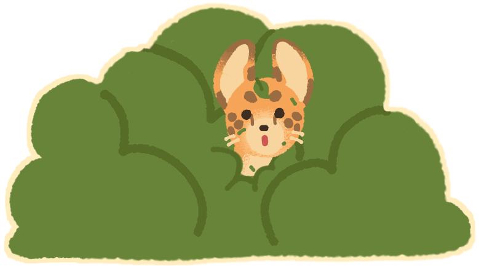
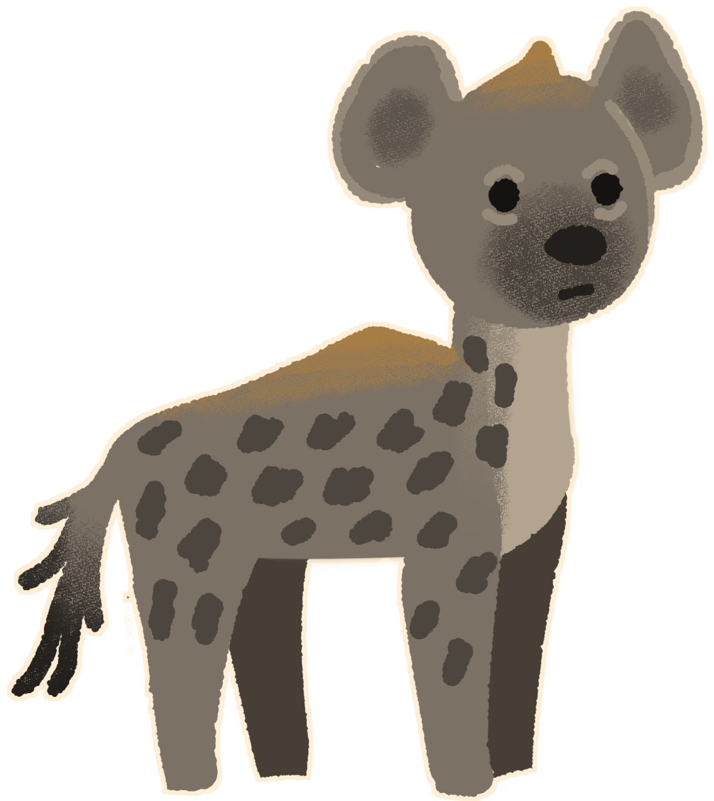
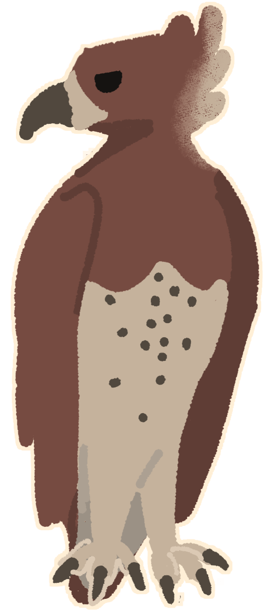
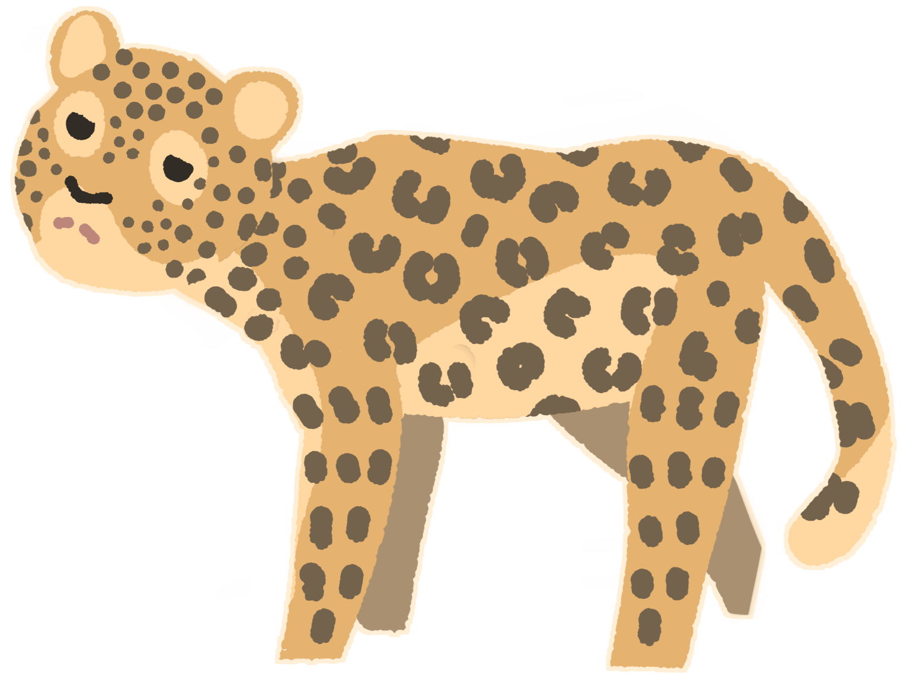
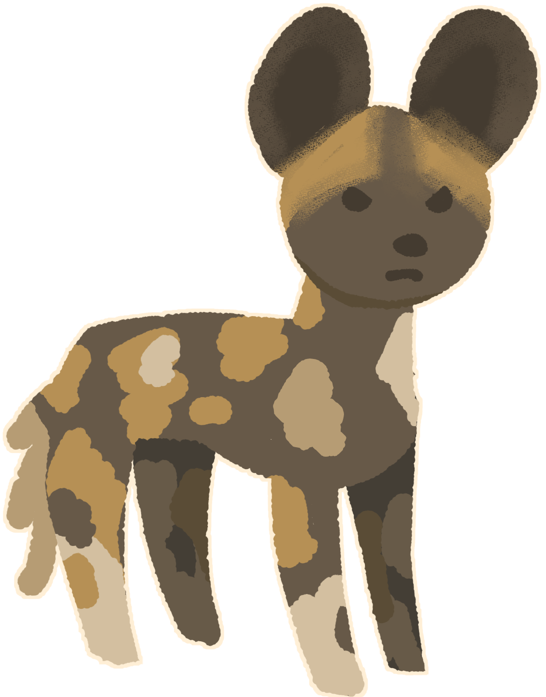
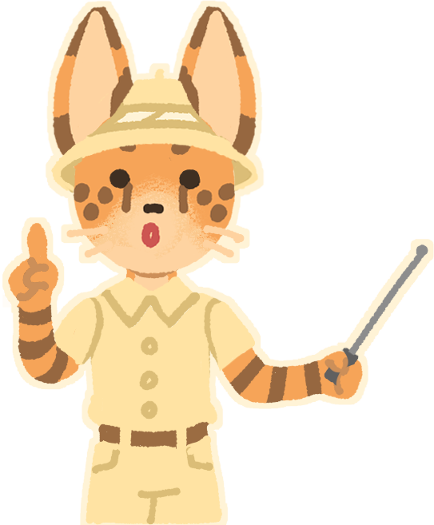

Сервалы и другие хищники саванны разделяют среду обитания, из-за чего между ними есть конкуреция за территорию и добычу. Обычно это стычки, которые трагично заканчиваются для одной из сторон.

Гие́ны (лат. Hyaenidae) — семейство хищных млекопитающих подотряда кошкообразных (Feliformia). Существует всего 4 современных вида гиен, в то время как по ископаемым остаткам описано более 70 видов. Они примерно в 10 раз больше сервалов

Боевой орёл (лат. Polemaetus bellicosus) — вид хищных птиц из семейства ястребиных. Они примерно одного размера с сервалами и дерутся на равных. Боевые орлы охотятся главным образом на мелких и средних млекопитающих и птиц, к примеру курообразных, молодых импал, дукеров, змей, варанов, сервалов, а также домашних животных, таких как собаки, козы и молодые овцы.

Леопа́рд (лат. Panthera pardus) — вид хищных млекопитающих семейства кошачьих, один из пяти представителей рода пантера (лат. Panthera), относящегося к подсемейству больших кошек. Они так же как и Гиены значительно больше сервалов, поэтому те избегают леопардов по возможности.

Гиеновидная собака (лат. Lycaon pictus) — хищное млекопитающее семейства псовых, единственный вид рода Lycaon. Её научное название образовано от др.-греч. λύκος («волк») и лат. pictus («расписной»).
Самыми распространенными хищниками сервалов являются люди. Торговля шкурами, хоть и сокращается, все еще ведется в таких странах, как Бенин и Сенегал. В Западной Африке сервалы используются в традиционной медицине. Скотоводы часто убивают сервалов, чтобы защитить свой скот, хотя сервалы обычно не охотятся на домашний скот.
